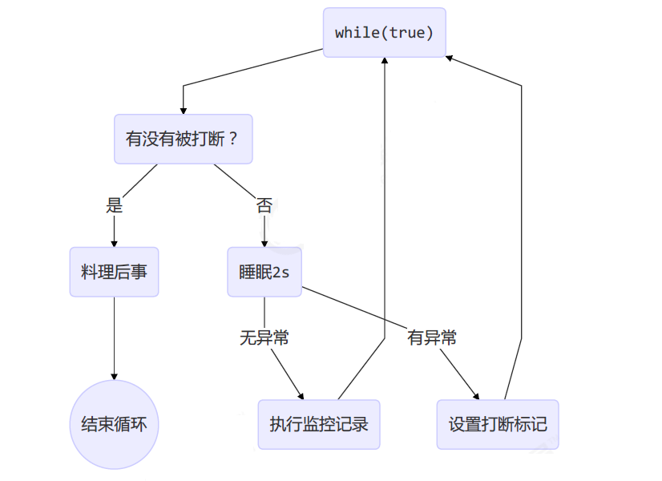

⓪基础
❶进程&线程
- 进程：指一个内存中运行的应用程序，每个进程都有自己独立的一块内存空间。
- 线程：比进程更小的执行单位，一个进程可以启动多个线程，每条线程并行执行不同的任务。
❷并行&并发
- 并行（Parallel）：在同一时刻，有多个指令在多个 CPU 上同时执行。
- 并发（Concurrent）：在同一时刻，有多个指令在单个 CPU 上交替执行。微观串行，宏观并行
❸同步&异步
- 同步（sync）：需要等待结果返回，才能继续运行
- 异步（Async）：不需要等待结果返回，就能继续运行
①线程
❶线程创建
Thread
@Slf4j
public class ThreadCreate {
public static void main(String[] args) {
Thread t1 = new Thread("t1"){
@Override
public void run() {
log.debug("hello");
}
};
// 启动线程
t1.start();
log.debug("do other things ...");
}
}
Runnable
@Slf4j
public class ThreadCreate {
public static void main(String[] args) {
Runnable task2 = new Runnable() {
@Override
public void run(){
log.debug("hello");
}
};
Thread t2 = new Thread(task2, "t2");
// 启动线程
t2.start();
log.debug("do other things ...");
}
}
//写法2
Thread t4 = new Thread(new Runnable() {
@Override
public void run() {
log.debug("hello");
}
},"t4");
t4.start();
Java 8 以后可以使用 lambda 精简代码
Runnable task2 = () -> log.debug("hello");
Thread t4 = new Thread(task2, "t4");
t4.start();
//写法2
Thread t4 = new Thread(() ->log.debug("hello"),"t4");
t4.start();
Callable
FutureTask 能够接收 Callable 类型的参数，用来处理有返回结果的情况
@Slf4j
public class ThreadCreate {
public static void main(String[] args) {
FutureTask<Integer> task3 = new FutureTask<>(new Callable<Integer>() {
@Override
public Integer call() throws Exception {
log.debug("hello");
return 100;
}
});
Thread t5 = new Thread(task3, "t5");
t5.start();
// 主线程阻塞，同步等待 task 执行完毕的结果
// 获取call方法返回的结果（正常/异常结果）
Integer result = task3.get();
log.debug("结果是:{}", result);
}
}
//简写
FutureTask<Integer> task3 = new FutureTask<>(() -> {
log.debug("hello");
return 100;
});
Thread t5 = new Thread(task3, "t5");
t5.start();
// 主线程阻塞，同步等待 task 执行完毕的结果
// 获取call方法返回的结果（正常/异常结果）
Integer result = task3.get();
log.debug("结果是:{}", result);
❷线程方法
API
| 方法 | 说明 |
|---|---|
| public void start() | 启动一个新线程，Java虚拟机调用此线程的 run 方法 |
| public void run() | 线程启动后调用该方法 |
| public void setName(String name) | 给当前线程取名字 |
| public void getName() | 获取当前线程的名字 线程存在默认名称：子线程是 Thread-索引，主线程是 main |
| public static Thread currentThread() | 获取当前线程对象 |
| public static void sleep(long time) | 让当前线程休眠多少毫秒再继续执行 Thread.sleep(0) : 让操作系统立刻重新进行一次 CPU 竞争 |
| public static native void yield() | 提示线程调度器让出当前线程对 CPU 的使用 |
| public final int getPriority() | 返回此线程的优先级 |
| public final void setPriority(int priority) | 更改此线程的优先级，常用 1 5 10 |
| public void interrupt() | 中断这个线程，异常处理机制 |
| public static boolean interrupted() | 判断当前线程是否被打断，清除打断标记 |
| public boolean isInterrupted() | 判断当前线程是否被打断，不清除打断标记 |
| public final void join() | 等待这个线程结束 |
| public final void join(long millis) | 等待这个线程死亡 millis 毫秒，0 意味着永远等待 |
| public final native boolean isAlive() | 线程是否存活（还没有运行完毕） |
| public final void setDaemon(boolean on) | 将此线程标记为守护线程或用户线程 |
run & start
- 直接调用 run 是在主线程中执行了 run，没有启动新的线程
@Slf4j(topic = "test")
public class RunAndStart {
public static void main(String[] args) {
Thread t1 = new Thread(() -> {
log.debug("测试！！！");
}, "t1");
t1.run();
log.debug("do other things ...");
}
}
16:09:05.495 [main] DEBUG test - 测试！！！
16:09:05.496 [main] DEBUG test - do other things ...
- 使用 start 是启动新的线程，通过新的线程间接执行 run 中的代码
@Slf4j(topic = "test")
public class RunAndStart {
public static void main(String[] args) {
Thread t1 = new Thread(() -> {
log.debug("测试！！！");
}, "t1");
t1.start();
log.debug("do other things ...");
}
}
16:10:24.051 [main] DEBUG test - do other things ...
16:10:24.051 [t1] DEBUG test - 测试！！！
sleep & yield
sleep：
调用 sleep 会让当前线程从
Running进入Timed Waiting状态（阻塞）sleep() 方法的过程中，线程不会释放对象锁
其它线程可以使用 interrupt 方法打断正在睡眠的线程，这时 sleep 方法会抛出 InterruptedException
睡眠结束后的线程未必会立刻得到执行，需要抢占 CPU
建议用 TimeUnit 的 sleep 代替 Thread 的 sleep 来获得更好的可读性
TimeUnit.SECONDS.sleep(10);
yield：
- 调用 yield 会让提示线程调度器让出当前线程对 CPU 的使用
- 具体的实现依赖于操作系统的任务调度器
- 会放弃 CPU 资源，锁资源不会释放
join
等待这个线程结束
原理：调用者轮询检查线程 alive 状态，t1.join() 等价于：
public final synchronized void join(long millis) throws InterruptedException {
// 调用者线程进入 thread 的 waitSet 等待, 直到当前线程运行结束
while (isAlive()) {
wait(0);
}
}
join 方法是被 synchronized 修饰的，本质上是一个对象锁，其内部的 wait 方法调用也是释放锁的，但是释放的是当前的线程对象锁，而不是外面的锁
当调用某个线程的 join 方法后，该线程抢占到 CPU 资源，就不再释放，直到线程执行完毕
线程同步：
- join 实现线程同步，因为会阻塞等待另一个线程的结束，才能继续向下运行
- 需要外部共享变量，不符合面向对象封装的思想
- 必须等待线程结束，不能配合线程池使用
- Future 实现同步：get() 方法阻塞等待执行结果
- main 线程接收结果
- get 方法是让调用线程同步等待
interrupt
打断线程
interrupt()：打断当前线程，异常处理机制
interrupted()：判断当前线程是否被打断，打断返回 true，清除打断标记
isInterrupted()：判断当前线程是否被打断，不清除打断标记
- sleep、wait、join 方法都会让线程进入阻塞状态，打断线程会清空打断状态（false）
public static void main(String[] args) throws InterruptedException {
Thread t1 = new Thread(()->{
try {
Thread.sleep(1000);
} catch (InterruptedException e) {
e.printStackTrace();
}
}, "t1");
t1.start();
Thread.sleep(500);
t1.interrupt();
System.out.println(" 打断状态: " + t1.isInterrupted());// 打断状态: false
}
- 打断正常运行的线程：不会清空打断状态（true）
public static void main(String[] args) throws Exception {
Thread t2 = new Thread(()->{
while(true) {
Thread current = Thread.currentThread();
boolean interrupted = current.isInterrupted();
if(interrupted) {
System.out.println(" 打断状态: " + interrupted);//打断状态: true
break;
}
}
}, "t2");
t2.start();
Thread.sleep(500);
t2.interrupt();
}
打断 park
park 作用类似 sleep，打断 park 线程，不会清空打断状态（true）
public static void main(String[] args) throws Exception {
Thread t1 = new Thread(() -> {
System.out.println("park...");
LockSupport.park();
System.out.println("unpark...");
System.out.println("打断状态：" + Thread.currentThread().isInterrupted());//打断状态：true
}, "t1");
t1.start();
Thread.sleep(2000);
t1.interrupt();
}
如果打断标记已经是 true, 则 park 会失效
LockSupport.park();
System.out.println("unpark...");
LockSupport.park();//失效，不会阻塞
System.out.println("unpark...");//和上一个unpark同时执行
可以修改获取打断状态方法，使用 Thread.interrupted()，清除打断标记
终止模式
终止模式之两阶段终止模式：Two Phase Termination
目标：在一个线程 T1 中如何优雅终止线程 T2？优雅指的是给 T2 一个后置处理器
错误思想：
- 使用线程对象的 stop() 方法停止线程：stop 方法会真正杀死线程，如果这时线程锁住了共享资源，当它被杀死后就再也没有机会释放锁，其它线程将永远无法获取锁
- 使用 System.exit(int) 方法停止线程：目的仅是停止一个线程，但这种做法会让整个程序都停止
两阶段终止模式图示：
打断线程可能在任何时间，所以需要考虑在任何时刻被打断的处理方法：
public class Test {
public static void main(String[] args) throws InterruptedException {
TwoPhaseTermination tpt = new TwoPhaseTermination();
tpt.start();
Thread.sleep(3500);
tpt.stop();
}
}
class TwoPhaseTermination {
private Thread monitor;
// 启动监控线程
public void start() {
monitor = new Thread(new Runnable() {
@Override
public void run() {
while (true) {
Thread thread = Thread.currentThread();
if (thread.isInterrupted()) {
System.out.println("后置处理");
break;
}
try {
Thread.sleep(1000); // 睡眠
System.out.println("执行监控记录"); // 在此被打断不会异常
} catch (InterruptedException e) { // 在睡眠期间被打断，进入异常处理的逻辑
e.printStackTrace();
// 重新设置打断标记，打断 sleep 会清除打断状态
thread.interrupt();
}
}
}
});
monitor.start();
}
// 停止监控线程
public void stop() {
monitor.interrupt();
}
}
daemon
Thread t = new Thread() {
@Override
public void run() {
System.out.println("running");
}
};
// 设置该线程为守护线程
t.setDaemon(true);
t.start();
用户线程：平常创建的普通线程
守护线程：服务于用户线程，只要其它非守护线程运行结束了，即使守护线程代码没有执行完，也会强制结束。
常见的守护线程：
- 垃圾回收器线程就是一种守护线程
- Tomcat 中的 Acceptor 和 Poller 线程都是守护线程，所以 Tomcat 接收到 shutdown 命令后，不会等待它们处理完当前请求
❸线程原理
Java 虚拟机栈（Java Virtual Machine Stacks）：每个线程启动后，虚拟机就会为其分配一块栈内存
- 每个栈由多个栈帧（Frame）组成，对应着每次方法调用时所占用的内存
- 每个线程只能有一个活动栈帧，对应着当前正在执行的那个方法
线程上下文切换（Thread Context Switch）：一些原因导致 CPU 不再执行当前线程，转而执行另一个线程
- 线程的 CPU 时间片用完
- 垃圾回收
- 有更高优先级的线程需要运行
- 线程自己调用了 sleep、yield、wait、join、park 等方法
程序计数器（Program Counter Register）：记录正在执行的字节码指令地址，是线程私有的
当 Context Switch 发生时，需要由操作系统保存当前线程的状态（PCB 中），并恢复另一个线程的状态，包括程序计数器、虚拟机栈中每个栈帧的信息，如局部变量、操作数栈、返回地址等
Java 中 main 方法启动的是一个进程也是一个主线程，main 方法里面的其他线程均为子线程，main 线程是这些线程的父线程
❹线程状态
操作系统进程的状态（5种）：创建态（new）、就绪态（ready）、运行态（running）、阻塞态（waiting）、终止态（terminated）

在 Java API 中 java.lang.Thread.State 这个枚举中给出了六种线程状态：
| 线程状态 | 导致状态发生条件 |
|---|---|
| NEW（新建） | 线程刚被创建，但是并未启动，还没调用 start 方法，只有线程对象，没有线程特征 |
| Runnable（可运行） | 线程可以在 Java 虚拟机中运行的状态，可能正在运行自己代码，也可能没有，这取决于操作系统处理器，调用了 t.start() 方法：就绪（经典叫法） |
| Blocked（阻塞） | 当一个线程试图获取一个对象锁，而该对象锁被其他的线程持有，则该线程进入 Blocked 状态；当该线程持有锁时，该线程将变成 Runnable 状态 |
| Waiting（无限等待） | 一个线程在等待另一个线程执行一个（唤醒）动作时，该线程进入 Waiting 状态，进入这个状态后不能自动唤醒，必须等待另一个线程调用 notify 或者 notifyAll 方法才能唤醒 |
| Timed Waiting （限期等待） | 有几个方法有超时参数，调用将进入 Timed Waiting 状态，这一状态将一直保持到超时期满或者接收到唤醒通知。带有超时参数的常用方法有 Thread.sleep 、Object.wait |
| Teminated（结束） | run 方法正常退出而死亡，或者因为没有捕获的异常终止了 run 方法而死亡 |

NEW → RUNNABLE：当调用 t.start() 方法时，由 NEW → RUNNABLE
RUNNABLE <–> WAITING：
调用 obj.wait() 方法时
调用 obj.notify()、obj.notifyAll()、t.interrupt()：
- 竞争锁成功，线程从 WAITING → RUNNABLE
- 竞争锁失败，线程从 WAITING → BLOCKED
当前线程调用 t.join() 方法，注意是当前线程在 t 线程对象的监视器上等待
当前线程调用 LockSupport.park() 方法
RUNNABLE <–> TIMED_WAITING：调用 obj.wait(long n) 方法、调用 t.join(long n) 方法、调用 Thread.sleep(long n)
RUNNABLE <–> BLOCKED：线程用 synchronized(obj) 获取了对象锁时竞争失败
❺线程查看命令
windows
- 任务管理器可以查看进程和线程数，也可以用来杀死进程
tasklist查看进程taskkill杀死进程
linux
ps -ef查看所有进程ps -fT -p <PID>查看某个进程（PID）的所有线程kill杀死进程top按大写 H 切换是否显示线程top -H -p <PID>查看某个进程（PID）的所有线程
Java
jps命令查看所有 Java 进程jstack <PID>查看某个 Java 进程（PID）的所有线程状态jconsole查看某个 Java 进程中线程的运行情况（图形界面）# jconsole 远程监控配置 java -Djava.rmi.server.hostname=`ip地址` -Dcom.sun.management.jmxremote - Dcom.sun.management.jmxremote.port=`连接端口` -Dcom.sun.management.jmxremote.ssl=是否安全连接 -Dcom.sun.management.jmxremote.authenticate=是否认证 java类
②同步
临界区-Critical Section
一段代码块内如果存在对共享资源的多线程读写操作，称这段代码块为临界区
static int counter = 0;
static void increment()
// 临界区
{
counter++;
}
static void decrement()
// 临界区
{
counter--;
}
竞态条件-Race Condition
多个线程在临界区内执行，由于代码的执行序列不同而导致结果无法预测，称之为发生了竞态条件
一个程序运行多个线程是没有问题，多个线程读共享资源也没有问题，在多个线程对共享资源读写操作时发生指令交错，就会出现问题
为了避免临界区的竞态条件发生（解决线程安全问题）：
- 阻塞式的解决方案：synchronized，lock
- 非阻塞式的解决方案：原子变量
管程（monitor）：指的是管理共享变量以及对共享变量的操作过程，让它们支持并发。翻译为 Java 就是管理类的成员变量和成员方法，让这个类是线程安全的。
synchronized
synchronized 是可重入、不公平的重量级锁
synchronized：对象锁，保证了临界区内代码的原子性，采用互斥的方式让同一时刻至多只有一个线程能持有对象锁，其它线程获取这个对象锁时会阻塞，保证拥有锁的线程可以安全的执行临界区内的代码，不用担心线程上下文切换
互斥和同步都可以采用 synchronized 关键字来完成，区别：
- 互斥是保证临界区的竞态条件发生，同一时刻只能有一个线程执行临界区代码
- 同步是由于线程执行的先后、顺序不同、需要一个线程等待其它线程运行到某个点
同步代码块
synchronized(锁对象){
// 访问共享资源的核心代码
}
实例：
public class demo {
static int counter = 0;
//static修饰，则元素是属于类本身的，不属于对象 ，与类一起加载一次，只有一个
static final Object obj = new Object();
public static void main(String[] args) throws InterruptedException {
Thread t1 = new Thread(() -> {
for (int i = 0; i < 5000; i++) {
synchronized (obj) {
counter++;
}
}
}, "t1");
Thread t2 = new Thread(() -> {
for (int i = 0; i < 5000; i++) {
synchronized (obj) {
counter--;
}
}
}, "t2");
t1.start();
t2.start();
t1.join();
t2.join();
System.out.println(counter);
}
}
同步方法
解决线程安全问题的核心方法是使用锁，每次只能一个线程进入访问
synchronized 修饰的方法的不具备继承性，所以子类是线程不安全的
如果子类的方法也被 synchronized 修饰，两个锁对象其实是一把锁，而且是子类对象作为锁
用法：直接给方法加上一个修饰符 synchronized
//同步方法
修饰符 synchronized 返回值类型 方法名(方法参数) {
方法体；
}
//同步静态方法
修饰符 static synchronized 返回值类型 方法名(方法参数) {
方法体；
}
如果方法是实例方法：同步方法默认用 this 作为的锁对象
public synchronized void test() {} //等价于 public void test() { synchronized(this) {} }如果方法是静态方法：同步方法默认用类名 .class 作为的锁对象
class Test{ public synchronized static void test() {} } //等价于 class Test{ public void test() { synchronized(Test.class) {} } }
线程八锁
线程八锁就是考察 synchronized 锁住的是哪个对象
说明：主要关注锁住的对象是不是同一个
- 锁住类对象，所有类的实例的方法都是安全的，类的所有实例都相当于同一把锁
- 锁住 this 对象，只有在当前实例对象的线程内是安全的，如果有多个实例就不安全
线程不安全：因为锁住的不是同一个对象，线程 1 调用 a 方法锁住的类对象和线程 2 调用 b 方法锁住的 n2 对象，不是同一个对象
class Number{
public static synchronized void a(){
Thread.sleep(1000);
System.out.println("1");
}
public synchronized void b() {
System.out.println("2");
}
}
public static void main(String[] args) {
Number n1 = new Number();
Number n2 = new Number();
new Thread(()->{ n1.a(); }).start();
new Thread(()->{ n2.b(); }).start();
}
线程安全：因为 n1 调用 a() 方法，锁住的是类对象，n2 调用 b() 方法，锁住的也是类对象，所以线程安全
class Number{
public static synchronized void a(){
Thread.sleep(1000);
System.out.println("1");
}
public static synchronized void b() {
System.out.println("2");
}
}
public static void main(String[] args) {
Number n1 = new Number();
Number n2 = new Number();
new Thread(()->{ n1.a(); }).start();
new Thread(()->{ n2.b(); }).start();
}
线程安全分析
- 成员变量和静态变量：
- 如果它们没有共享，则线程安全
- 如果它们被共享了，根据它们的状态是否能够改变，分两种情况：
- 如果只有读操作，则线程安全
- 如果有读写操作，则这段代码是临界区，需要考虑线程安全问题
- 局部变量：
- 局部变量是线程安全的
- 局部变量引用的对象不一定线程安全（逃逸分析）：
- 如果该对象没有逃离方法的作用范围，它是线程安全的（每一个方法有一个栈帧）
- 如果该对象逃离方法的作用范围，需要考虑线程安全问题（暴露引用）
线程安全类：String、Integer、StringBuffer、Random、Vector、Hashtable、java.util.concurrent 包
每个方法是原子的，但多个方法的组合不是原子的，只能保证调用的方法内部安全：
Hashtable table = new Hashtable();
// 线程1，线程2
if(table.get("key") == null) {
table.put("key", value);
}
// get、put 两个方法分别是线程安全的，一起使用就是不安全的

无状态类（就是没有成员变量的类）是线程安全的
不可变类线程安全：String、Integer 等都是不可变类，内部的状态不可以改变，方法是线程安全
String 的 replace 等方法底层是新建一个对象，复制过去
Map<String,Object> map = new HashMap<>(); // 线程不安全 String S1 = "..."; // 线程安全 final String S2 = "..."; // 线程安全 Date D1 = new Date(); // 线程不安全 final Date D2 = new Date(); // 线程不安全，final让D2引用的对象不能变，但对象的内容可以变
- 抽象方法如果有参数，被重写后行为不确定可能造成线程不安全，被称之为外星方法：
public abstract foo(Student s);
Sponsor❤️
您的支持是我不断前进的动力，如果您感觉本文对您有所帮助的话，可以考虑打赏一下本文，用以维持本博客的运营费用，拒绝白嫖，从你我做起！🥰🥰🥰
| 支付宝 | 微信 |
 |
 |